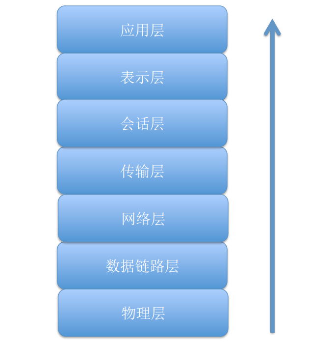
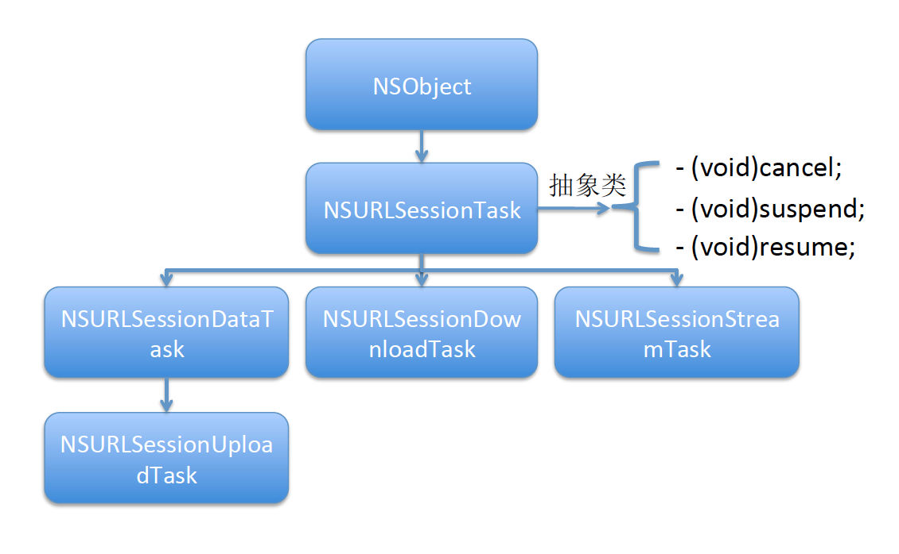
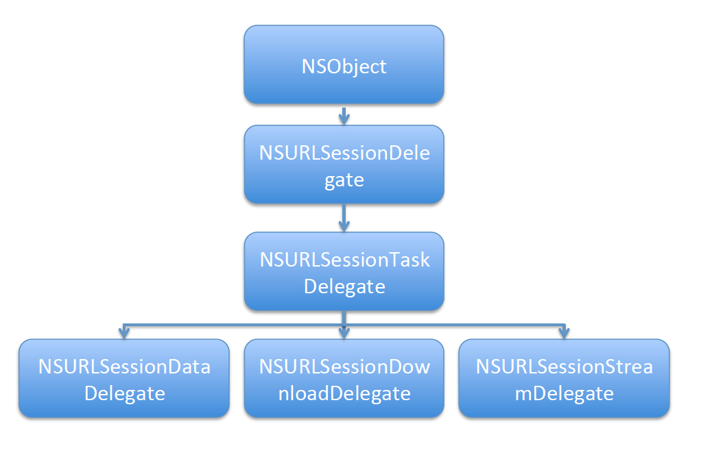

回话层 -> 表示层 -> 应用层，可以将NSURLSession类理解为回话层，用于管理网络接口的创建、维护、删除等等工作，我们要做的工作也只是回话层之后的层即可，底层的工作NSURLSession已经帮我们封装好了。
其核心就是对网络任务进行封装，实现多线程。比如将一个网络请求交给NSURLSession，最后NSURLSession将访问结果通过block回调返回，期间自动实现多线程，而且可以用个代理实现监听（是否成功，当前的进度等等）；大致分为3个步骤
x
1NSURL *url = [NSURL URLWithString:@"协议://主机地址/路径?参数&参数"];解释如下：
xxxxxxxxxx1NSURLRequest *request = [NSURLRequest requestWithURL:url cachePolicy:NSURLRequestUseProtocolCachePolicy timeoutInterval:30.0];参数解释如下：
xxxxxxxxxx1 * NSURLRequestUseProtocolCachePolicy = 0 //默认的缓存策略，使用协议的缓存策略2 * NSURLRequestReloadIgnoringLocalCacheData = 1 //每次都从网络加载3 * NSURLRequestReturnCacheDataElseLoad = 2 //返回缓存否则加载，**很少使用**4 * NSURLRequestReturnCacheDataDontLoad = 3 //只返回缓存，没有也不加载，**很少使用**timeoutInterval：超长时间，默认60s，这是设置为30s
另外，还可以设置其他一些信息，比如请求头，请求体等等
注意，下面的request应为NSMutableURLRequest，即可变类型
x
1// 告诉服务器数据为json类型2[request setValue:@"application/json" forHTTPHeaderField:@"Content-Type"]; // 设置请求体(json类型)3NSData *jsonData = [NSJSONSerialization dataWithJSONObject:@{@"userid":@"123456"} options:NSJSONWritingPrettyPrinted error:nil];4request.HTTPBody = jsonData; 

苹果提供的全局NSURLSession单例为例。
321/// 向网络请求数据2- (void)NSURLSessionTest {3 // 1.创建url4 // 请求一个网页5 NSString *urlString = @"http://www.cnblogs.com/mddblog/p/5215453.html";67// 一些特殊字符编码8 urlString = [urlString stringByAddingPercentEncodingWithAllowedCharacters:[NSCharacterSet URLQueryAllowedCharacterSet]];9 NSURL *url = [NSURL URLWithString:urlString];10 11 // 2.创建请求 并：设置缓存策略为每次都从网络加载 超时时间30秒12 NSURLRequest *request = [NSURLRequest requestWithURL:url cachePolicy:NSURLRequestReloadIgnoringLocalCacheData timeoutInterval:30];1314 // 3.采用苹果提供的共享session15 NSURLSession *sharedSession = [NSURLSession sharedSession];16 17 // 4.由系统直接返回一个dataTask任务18 NSURLSessionDataTask *dataTask = [sharedSession dataTaskWithRequest:request completionHandler:^(NSData * _Nullable data, NSURLResponse * _Nullable response, NSError * _Nullable error) {19 // 网络请求完成之后就会执行，NSURLSession自动实现多线程20 NSLog(@"%@",[NSThread currentThread]);21 if (data && (error == nil)) {22 // 网络访问成功23 NSLog(@"data=%@",[[NSString alloc] initWithData:data encoding:NSUTF8StringEncoding]);24 } else {25 // 网络访问失败26 NSLog(@"error=%@",error);27 }28 }];29 30 // 5.每一个任务默认都是挂起的，需要调用 resume 方法31 [dataTask resume];32}xxxxxxxxxx221/// 文件下载2- (void)NSURLSessionDownloadTaskTest { // 1.创建url3 NSString *urlString = [NSString stringWithFormat:@"http://localhost/周杰伦 - 枫.mp3"]; // 一些特殊字符编码4 urlString = [urlString stringByAddingPercentEncodingWithAllowedCharacters:[NSCharacterSet URLQueryAllowedCharacterSet]];5 NSURL *url = [NSURL URLWithString:urlString]; // 2.创建请求6 NSURLRequest *request = [NSURLRequest requestWithURL:url]; // 3.创建会话，采用苹果提供全局的共享session7 NSURLSession *sharedSession = [NSURLSession sharedSession]; // 4.创建任务8 NSURLSessionDownloadTask *downloadTask = [sharedSession downloadTaskWithRequest:request completionHandler:^(NSURL * _Nullable location, NSURLResponse * _Nullable response, NSError * _Nullable error) { if (error == nil) { // location:下载任务完成之后,文件存储的位置，这个路径默认是在tmp文件夹下! // 只会临时保存，因此需要将其另存9 NSLog(@"location:%@",location.path); // 采用模拟器测试，为了方便将其下载到Mac桌面 // NSString *filePath = [NSSearchPathForDirectoriesInDomains(NSCachesDirectory, NSUserDomainMask, YES) lastObject];10 NSString *filePath = @"/Users/userName/Desktop/周杰伦 - 枫.mp3";11 NSError *fileError;12 [[NSFileManager defaultManager] copyItemAtPath:location.path toPath:filePath error:&fileError]; if (fileError == nil) {13 NSLog(@"file save success");14 } else {15 NSLog(@"file save error: %@",fileError);16 }17 } else {18 NSLog(@"download error:%@",error);19 }20 }]; // 5.开启任务21[downloadTask resume];22}3.1 采用uploadTask任务，以数据流的方式进行上传
这种方式好处就是大小不受限制，上传需要服务器端脚本支持，脚本源代码见本文档最后的附录，客户端示例代码如下：
131/// 以流的方式上传，大小理论上不受限制，但应注意时间2- (void) NSURLSessionBinaryUploadTaskTest { // 1.创建url 采用Apache本地服务器3 NSString *urlString = @"http://localhost/upload.php"; urlString = [urlString stringByAddingPercentEncodingWithAllowedCharacters:[NSCharacterSet URLFragmentAllowedCharacterSet]];4 NSURL *url = [NSURL URLWithString:urlString]; // 2.创建请求5 NSMutableURLRequest *request = [NSMutableURLRequest requestWithURL:url]; // 文件上传使用post6 request.HTTPMethod = @"POST"; // 3.开始上传 request的body data将被忽略，而由fromData提供7 [[[NSURLSession sharedSession] uploadTaskWithRequest:request fromData:[NSData dataWithContentsOfFile:@"/Users/userName/Desktop/IMG_0359.jpg"] completionHandler:^(NSData * _Nullable data, NSURLResponse * _Nullable response, NSError * _Nullable error) { if (error == nil) {8 NSLog(@"upload success：%@",[[NSString alloc] initWithData:data encoding:NSUTF8StringEncoding]);9 } else {10 NSLog(@"upload error:%@",error);11 }12 }] resume];13}3.2 采用dataTask任务，拼接表单的方式进行上传
注意：然而在苹果官方对uploadTaskWithRequest函数的介绍：
request的body data in this request object are ignored，会被忽略，而测试时发现没有被忽略，且request必须包含HTTPBody，反而fromData被忽略。那么暂时理解为苹果对uploadTaskWithRequest函数的使用时没有考虑拼接表单的方式，那么当我们使用拼接表单时，建议不要使用uploadTask，虽然这样也能成功
表单拼接格式如下，boundary作为分界线：
51--boundary2Content-Disposition:form-data;name=”表单控件名称”;filename=”上传文件名称”3Content-Type:要上传文件MIME Types45要上传文件二进制数据; --boundary--拼接表单示例代码：
601/// 文件上传2- (void)NSURLSessionUploadTaskTest { // 1.创建url 采用Apache本地服务器3 NSString *urlString = @"http://localhost/upload/upload.php";4 urlString = [urlString stringByAddingPercentEncodingWithAllowedCharacters:[NSCharacterSet URLFragmentAllowedCharacterSet]];5 NSURL *url = [NSURL URLWithString:urlString]; // 2.创建请求6 NSMutableURLRequest *request = [NSMutableURLRequest requestWithURL:url]; // 文件上传使用post7 request.HTTPMethod = @"POST";8 NSString *contentType = [NSString stringWithFormat:@"multipart/form-data; boundary=%@",@"boundary"];9 [request setValue:contentType forHTTPHeaderField:@"Content-Type"]; // 3.拼接表单，大小受MAX_FILE_SIZE限制(2MB) FilePath:要上传的本地文件路径 formName:表单控件名称，应于服务器一致10 NSData* data = [self getHttpBodyWithFilePath:@"/Users/userName/Desktop/IMG_0359.jpg" formName:@"file" reName:@"newName.png"];11 request.HTTPBody = data; // 根据需要是否提供，非必须,如果不提供，session会自动计算12 [request setValue:[NSString stringWithFormat:@"%lu",data.length] forHTTPHeaderField:@"Content-Length"]; // 4.1 使用dataTask13 [[[NSURLSession sharedSession] dataTaskWithRequest:request completionHandler:^(NSData * _Nullable data, NSURLResponse * _Nullable response, NSError * _Nullable error) { if (error == nil) {14 NSLog(@"upload success：%@",[[NSString alloc] initWithData:data encoding:NSUTF8StringEncoding]);15 } else {16 NSLog(@"upload error:%@",error);17 }1819 }] resume]; #if 020 // 4.2 开始上传 使用uploadTask fromData:可有可无，会被忽略21 [[[NSURLSession sharedSession] uploadTaskWithRequest:request fromData:nil completionHandler:^(NSData * _Nullable data, NSURLResponse * _Nullable response, NSError * _Nullable error) { if (error == nil) {22 NSLog(@"upload success：%@",[[NSString alloc] initWithData:data encoding:NSUTF8StringEncoding]);23 } else {24 NSLog(@"upload error:%@",error);25 }26 }] resume]; #endif } /// filePath:要上传的文件路径 formName：表单控件名称 reName：上传后文件名27- (NSData *)getHttpBodyWithFilePath:(NSString *)filePath formName:(NSString *)formName reName:(NSString *)reName28{29 NSMutableData *data = [NSMutableData data];30 NSURLResponse *response = [self getLocalFileResponse:filePath]; // 文件类型：MIMEType 文件的大小：expectedContentLength 文件名字：suggestedFilename31 NSString *fileType = response.MIMEType; // 如果没有传入上传后文件名称,采用本地文件名!32 if (reName == nil) {33 reName = response.suggestedFilename;34 } // 表单拼接35 NSMutableString *headerStrM =[NSMutableString string];36 [headerStrM appendFormat:@"--%@\r\n",@"boundary"]; // name：表单控件名称 filename：上传文件名37 [headerStrM appendFormat:@"Content-Disposition: form-data; name=%@; filename=%@\r\n",formName,reName];38 [headerStrM appendFormat:@"Content-Type: %@\r\n\r\n",fileType];39 [data appendData:[headerStrM dataUsingEncoding:NSUTF8StringEncoding]]; // 文件内容40 NSData *fileData = [NSData dataWithContentsOfFile:filePath];41 [data appendData:fileData];4243 NSMutableString *footerStrM = [NSMutableString stringWithFormat:@"\r\n--%@--\r\n",@"boundary"];44 [data appendData:[footerStrM dataUsingEncoding:NSUTF8StringEncoding]]; // NSLog(@"dataStr=%@",[[NSString alloc] initWithData:data encoding:NSUTF8StringEncoding]);45 return data;46} /// 获取响应，主要是文件类型和文件名47- (NSURLResponse *)getLocalFileResponse:(NSString *)urlString48{49 urlString = [urlString stringByAddingPercentEncodingWithAllowedCharacters:[NSCharacterSet URLFragmentAllowedCharacterSet]]; // 本地文件请求50 NSURL *url = [NSURL fileURLWithPath:urlString];51 NSURLRequest *request = [NSURLRequest requestWithURL:url];5253 __block NSURLResponse *localResponse = nil; // 使用信号量实现NSURLSession同步请求54 dispatch_semaphore_t semaphore = dispatch_semaphore_create(0);55 [[[NSURLSession sharedSession] dataTaskWithRequest:request completionHandler:^(NSData * _Nullable data, NSURLResponse * _Nullable response, NSError * _Nullable error) {56 localResponse = response;57 dispatch_semaphore_signal(semaphore);58 }] resume];59 dispatch_semaphore_wait(semaphore, DISPATCH_TIME_FOREVER); return localResponse;60}NSURLConnection是全局性的，即它的配置对全局有效，如果有两个链接需要不同的cookies、证书这些公共资源，则NSURLConnection无法满足要求，这时NSURLSession的优势则体现出来，NSURLSession可以通过NSURLSessionConfiguration可以设置全局的网络访问属性
21NSURLSessionConfiguration *config = [NSURLSessionConfiguration defaultSessionConfiguration]; // delegateQueue：请求完成回调函数和代理函数的运行线程，如果为nil则系统自动创建一个串行队列，不影响sessionTask的运行线程2NSURLSession *session = [NSURLSession sessionWithConfiguration:config delegate:self delegateQueue:[NSOperationQueue mainQueue]];三种回话方式：
设置一些网络属性：
61configuration.HTTPAdditionalHeaders = @{ @"Accept": 2@"application/json", 3@"Accept-Language": 4@"en", 5@"Authorization": authString, 6@"User-Agent": userAgentString};networkServiceType，设置网络服务类型
allowsCellularAccess：允许蜂窝访问
timeoutIntervalForRequest：请求的超时时长
requestCachePolicy：缓存策略
注意事项:如果是自定义会话并指定了代理，会话会对代理进行强引用,在视图控制器销毁之前，需要取消网络会话，否则会造成内存泄漏